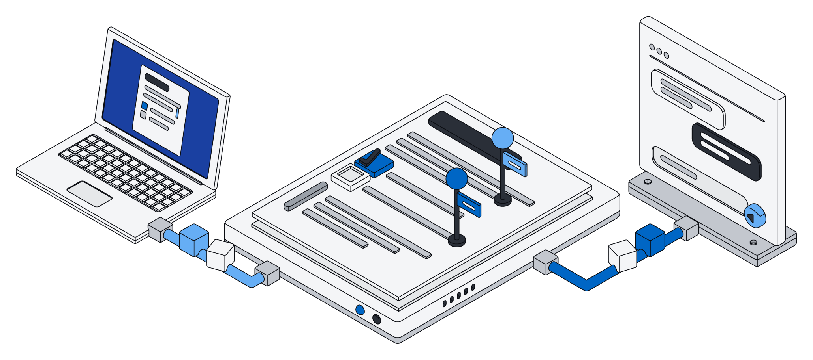

Notion is one of the best-loved work tools of the last decade, and it earned that. It is polished, quick to learn and flexible enough that teams run everything in it, from meeting notes to product roadmaps. Pages and databases sit side by side, the templates are excellent, and it has its own AI built in.
Archive also gives your team pages and lists. So why look at it at all? Because Archive is built for the moment your AI assistant stops being a chat window on the side and starts doing real work in your business.
Same idea, different foundation
In Archive, every list is made of real records in a real database. Each field knows what it holds, such as an amount of money, a date or an email address. Records can point to each other, and the rules about who can see and change what are enforced underneath, not only in the screens you click through.
Picture a design agency of eight people that tracks clients, projects and invoices. In Archive those are three lists that know about each other: a project belongs to a client, and an invoice belongs to a project. Ask Claude which clients have unpaid invoices on projects that wrapped up last month, and it reads the actual records to answer. Ask it to draft the reminders and mark them as sent, and it does that too, in one go.
Your AI, working directly in your records
Archive works with the AI you already use: ChatGPT, Claude, Gemini and Grok. Add Archive once, and your assistant can read and change your lists, pages and files directly, as you. It sees exactly what you are allowed to see, and nothing more.
Rather than pressing a long chain of small buttons, the assistant writes a short piece of code and Archive runs it right next to your data. One request can search, update fifty records and write a summary page. Changes are all-or-nothing: if something goes wrong halfway, nothing is saved, so you never end up with half an update to clean up.
Each assistant gets its own access key. You can narrow what it may touch, and switch one off without affecting the others.
The question is not whether your AI can see your workspace. It is whether it can do real work there, safely.
Notion connects to outside tools and assistants too, and Notion AI is genuinely useful for writing and summarizing. The difference is in what sits underneath: in Archive, every record your assistant touches lives in a database that checks every change and keeps everything in step.
Pages people and AI write together
Archive pages are live documents. Your team types in the browser, an assistant edits the same page at the same moment, and every change merges. Nobody's typing gets overwritten. While the assistant works, it shows up in the list of who is on the page, just like a teammate.
Say a property manager keeps a page per building, with a checklist for the next inspection, notes from tenants and open repairs. While she walks the building ticking boxes on her phone, Claude adds the repair requests that came in by email that morning to the same page. Neither of them waits for the other.

To be fair: Notion's editor is richer today, with embeds, layouts and years of polish. Archive pages are blocks of text, such as headings, lists, to-dos, quotes and code. Inline formatting and nested blocks are on the way.
Files that stay files
Most teams keep contracts, budgets and decks close to their notes. In Archive, Word, Excel and PowerPoint files stay real files that open anywhere, and your assistant can edit them in place: change a clause, fill in a cell, update the text on a slide. Everything it was not asked to touch, including styles, images and comments, stays exactly as it was.
A model that knows your business
Every time someone files an email, a receipt or a contract into the right list, that is a lesson. Archive can turn those lessons into a small model of your own: one that sorts new work into the right list, or one that reads a long document and fills in the record for you. It learns from your own records only, and your assistants can call it whenever they need it.
At a glance
Which one fits
If your team mostly writes, with wikis, specs and meeting notes, and your lists are light, Notion is a wonderful home and its editor is hard to beat.
If your lists are the heart of the business, such as clients, orders, properties or invoices, and you want ChatGPT or Claude to do real work in them rather than only answer questions, Archive was built for that. Every change is checked, every record stays consistent, and your AI works under the same rules as everyone else.
It does not have to be either/or. Archive's Notion connector brings your pages and databases in, read-only, so you can try Archive with real content without moving anything.